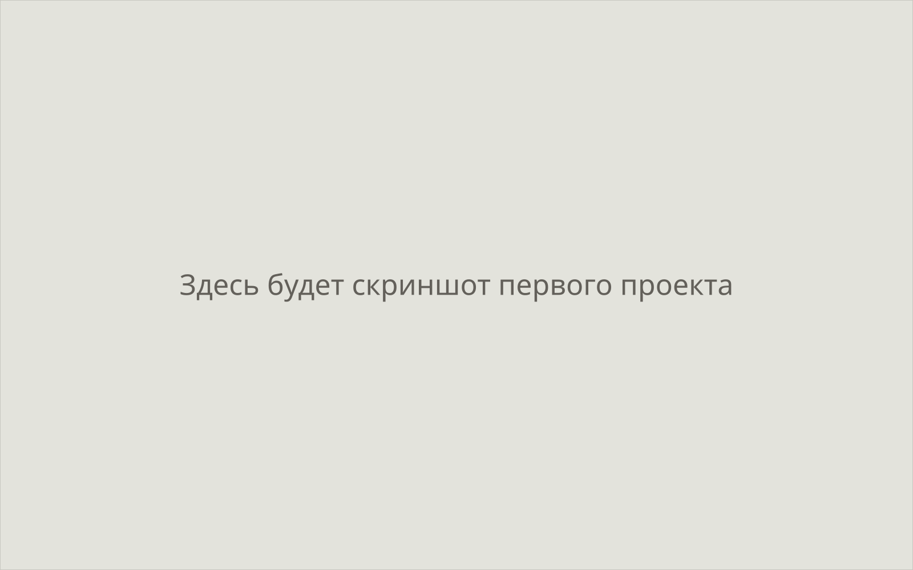
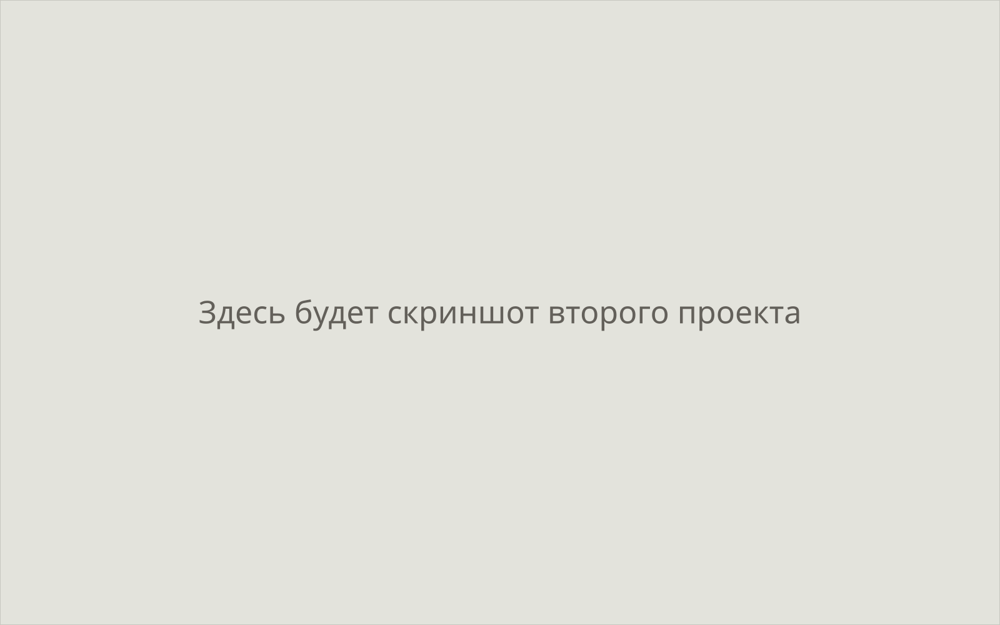
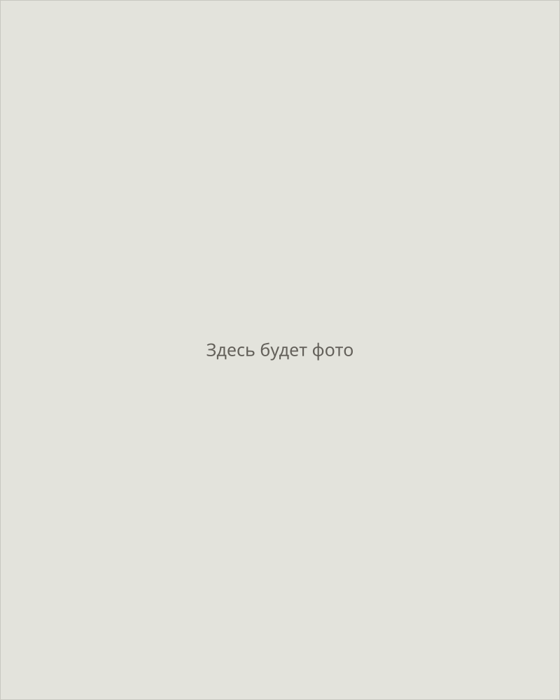

Семь дней от разговора до запуска.
Лендинги и сайты под ключ для малого бизнеса: структура, текст, дизайн, вёрстка, интеграции. От $200, половина оплаты — после сдачи.
Так проходит неделя от брифа до рабочего сайта
- день 1Бриф и смета
- дни 2–3Структура и текст
- дни 4–5Дизайн и согласование
- день 6Вёрстка и адаптив
- день 7Запуск
Условия
- Срок лендинга 5–7 дней с момента, когда пришли материалы и предоплата
- Стоимость от $200 точная цифра — после короткого брифа, бесплатно
- Оплата 50% на старте остальное, когда сайт принят и работает
- Поддержка после запуска 30 дней правки, доработки и исправления бесплатно
Работа
Проекты для малого бизнеса и локальных услуг. Каждый сдан в срок, который назвал на брифе.

Название проекта
Одностраничный сайт под услугу: структура, текст, дизайн, форма заявки и аналитика. Заявки уходят в Telegram владельцу.
Сдан на шестой день

Название проекта
Многостраничный сайт с каталогом услуг и админкой: владелец правит тексты и цены сам, без обращения к разработчику.
Сдан за две недели
Как проходит неделя
Срок держится не за счёт спешки, а за счёт порядка: каждый этап заканчивается тем, что вы что-то видите и утверждаете.
-
день 1
Бриф и смета
Отвечаете на десяток вопросов: что за бизнес, кому продаёте, чем отличаетесь от соседей. В тот же день называю точный срок и цену.
От вас: ответы на вопросы, логотип и прайс, если они есть
-
дни 2–3
Структура и текст
Собираю порядок блоков и пишу текст под вашу услугу. Показываю до того, как начнётся дизайн, — переписать абзац дешевле, чем перерисовать экран.
От вас: правки одним списком, не по одной в день
-
дни 4–5
Дизайн и согласование
Рисую макет на вашем настоящем тексте, а не на «рыбе». Правки на этом этапе входят в стоимость, поэтому при сдаче сюрпризов не бывает.
От вас: фотографии и одно «да» на макет
-
день 6
Вёрстка и адаптив
Перевожу макет в код. Проверяю на телефоне, планшете и десктопе, отдельно смотрю скорость загрузки — от неё зависит и позиция в поиске, и заявки.
От вас: ничего, это моя часть
-
день 7
Запуск
Ставлю сайт на ваш домен и хостинг, подключаю аналитику и форму заявок, передаю все доступы. Дальше 30 дней правки бесплатны.
От вас: доступы к домену или полчаса, чтобы завести их вместе
Услуги
Лендинги под ключ
Одностраничный сайт под конкретную услугу или предложение: структура, текст, дизайн, вёрстка, форма заявок и аналитика. Запускается за 5–7 дней.
Многостраничные сайты
Корпоративный сайт или каталог услуг: продуманная навигация, страницы под каждое направление, блог и понятная админка, чтобы вносить правки самому.
Вёрстка по макету
Готовый дизайн из Figma превращаю в чистый адаптивный код: пиксель в пиксель, быстрая загрузка, корректная работа на телефоне, планшете и десктопе.
Интеграции и автоматизация
Заявки уходят в CRM и мессенджер, оплата принимается онлайн, рассылки и уведомления работают без ручного участия. Меньше рутины на стороне владельца.
SEO-оптимизация
Техническая база для поиска: семантика и мета-теги, скорость и Core Web Vitals, микроразметка, карта сайта. Сайт находят по запросам, а не только по рекламе.
Цены
Итоговая смета зависит от числа страниц и интеграций. Точную цифру называю после короткого брифа — он бесплатный и ни к чему не обязывает.
Лендинг
от $200
5–7 дней
- Структура и текст под услугу
- Дизайн и адаптив
- Форма заявки и аналитика
Многостраничный сайт
от $300
от двух недель
- Страницы под направления
- Каталог, блог, админка
- Базовая SEO-подготовка
Вёрстка по макету
от $100
от трёх дней
- Чистый адаптивный код
- Скорость и Core Web Vitals
- Передача с документацией
Что вы получаете точно
Срок в договорённости
Лендинг — 5–7 дней. Срок фиксируем до старта, и я его держу.
Месяц поддержки
30 дней после запуска правки, доработки и исправления бесплатны.
Оплата пополам
50% на старте, остальное — когда сайт принят и работает.
Сайт остаётся вашим
Доступы, домен, хостинг и код передаю вам. Привязки ко мне нет.
Без конструкторов
Обычный код, который сможет подхватить любой разработчик. Ежемесячной платы за платформу не будет.
Кто делает
Делаю сайты для малого бизнеса: беру задачу целиком и довожу до запуска. Без посредников, без переписки на три недели и без «дизайнер в отпуске, вернёмся к вам в понедельник».
Работаю один, поэтому отвечаю за результат сам и называю сроки, которые могу удержать. Если вижу, что задача не укладывается в неделю, говорю об этом на брифе, а не на седьмой день.
Роман Баукин

Частые вопросы
Что нужно от меня для старта?
Короткий бриф: что за бизнес, кому продаёте, какие услуги и материалы уже есть. Текст и структуру могу собрать сам — фотографии, логотип и прайс присылаете вы.
Реально уложиться в семь дней?
Да, если материалы приходят вовремя и правки обсуждаем одним блоком, а не по одной в день. Срок считается с момента, когда получены контент и предоплата.
Как считается стоимость?
Лендинг — от $200, многостраничный сайт — от $300, вёрстка по макету — от $100. Точную цифру называю после брифа: она зависит от числа страниц и интеграций.
Что входит в бесплатную поддержку?
30 дней после запуска: правки текста и блоков, исправление ошибок, помощь с доступами и настройками. Новые разделы считаются отдельно.
Сайт будет работать на телефоне?
Да. Раскладку под телефон, планшет и десктоп проверяю на реальных устройствах, отдельно смотрю скорость загрузки.
А если мне не понравится результат?
Структуру и дизайн согласуем до вёрстки, поэтому увидеть готовый сайт и удивиться невозможно. Правки на этапе согласования входят в стоимость.
Расскажите о проекте
Напишите в Telegram — задам несколько вопросов о бизнесе и задаче и в тот же день назову срок и цену. Бриф и оценка бесплатны и ни к чему не обязывают.